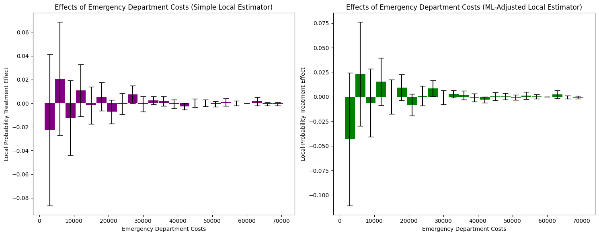
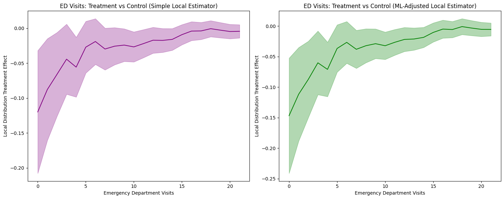
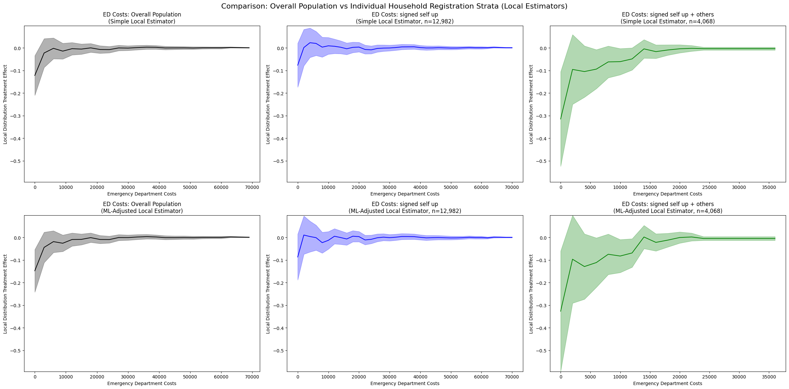

Oregon Health Insurance Experiment¶
The Oregon Health Insurance Experiment is a landmark randomized controlled trial conducted in 2008, where approximately 24,000 low-income adults were randomly assigned to either receive the opportunity to enroll in Medicaid (treatment group) or remain uninsured (control group). This unique natural experiment allows us to examine how public health insurance affects healthcare utilization and costs across the entire distribution.
Background: Due to budget constraints, Oregon decided to expand its Medicaid program through a lottery system, randomly selecting eligible individuals for enrollment opportunities. This created a rare natural experiment with non-compliance (not all selected individuals enrolled) that enables rigorous causal evaluation using Local Distribution Treatment Effects (LDTE) methodology.
Research Question: How does Medicaid assignment (and enrollment) affect healthcare utilization (emergency department visits and costs), accounting for non-compliance, and how do these effects vary across the entire distribution of healthcare outcomes?
Data Setup and Loading¶
Data Source: The Oregon Health Insurance Experiment data used in this tutorial is publicly available through the National Bureau of Economic Research (NBER). You can download the dataset from the official NBER Public Use Data Archive at: https://www.nber.org/research/data/oregon-health-insurance-experiment-data
The dataset includes multiple files containing information about participants in the experiment:
oregonhie_descriptive_vars.dta: Demographic and baseline characteristicsoregonhie_ed_vars.dta: Emergency department utilization dataoregonhie_inperson_vars.dta: In-person survey responsesoregonhie_stateprograms_vars.dta: State program participation data
This data supports research on how health insurance affects healthcare utilization and is maintained by researchers Amy Finkelstein and Katherine Baicker. Please ensure you comply with the data use agreements when downloading and using this dataset.
Import Libraries¶
First, we import the necessary libraries for data processing, analysis, and visualization:
import numpy as np
import pandas as pd
import matplotlib.pyplot as plt
import os
from sklearn.linear_model import LinearRegression
from sklearn.preprocessing import LabelEncoder
import dte_adj
from dte_adj.plot import plot
Load and Merge Datasets¶
Next, we load the four separate data files and merge them into a single dataset:
# Load the Oregon Health Insurance Experiment dataset
base_path = "OHIE_Public_Use_Files/OHIE_Data"
df_descriptive = pd.read_stata(os.path.join(base_path, "oregonhie_descriptive_vars.dta"))
df_ed = pd.read_stata(os.path.join(base_path, "oregonhie_ed_vars.dta"))
df_inp = pd.read_stata(os.path.join(base_path, "oregonhie_inperson_vars.dta"))
df_state = pd.read_stata(os.path.join(base_path, "oregonhie_stateprograms_vars.dta"))
# Merge all datasets
df = (
df_descriptive
.merge(df_ed, on='person_id', how='inner')
.merge(df_inp, on='person_id', how='left')
.merge(df_state, on='person_id', how='inner')
)
print(f"Dataset shape: {df.shape}")
print(f"Average num_visit_cens_ed by enrollment:\n{df.groupby('ohp_all_ever_inperson')['num_visit_cens_ed'].mean()}")
print(f"Average ed_charg_tot_ed by enrollment:\n{df.groupby('ohp_all_ever_inperson')['ed_charg_tot_ed'].mean()}")
Data Preprocessing¶
Next, we prepare the data for the DTE analysis. This involves creating treatment variables, encoding categorical features, and selecting control variables:
# Create treatment assignment (instrumental variable): 0=Not selected, 1=Selected
treatment_assignment_mapping = {'Not selected': 0, 'Selected': 1}
df['Z'] = df['treatment'].map(treatment_assignment_mapping)
# Create actual treatment indicator: 0=Not enrolled, 1=Enrolled
treatment_mapping = {'NOT enrolled': 0, 'Enrolled': 1}
df['D'] = df['ohp_all_ever_inperson'].map(treatment_mapping)
# Create strata based on household size
df.rename(columns={'numhh_list': 'strata'}, inplace=True)
df['strata'] = df['strata'].astype(str).replace({
'signed self up + 1 additional person': 'signed self up + others',
'signed self up + 2 additional people': 'signed self up + others'
})
# Create feature mappings for categorical variables
gender_mapping = {'Male': 0, 'Female': 1, 'Transgender F to M': 2, 'Transgender M to F': 3}
health_last12_mapping = {'1: Very poor': 1, '2: Poor': 2, '3: Fair': 3, '4: Good': 4, '5: Very good': 5, '6: Excellent': 6}
edu_mapping = {'HS diploma or GED': 0, 'Post HS, not 4-year': 1, 'Less than HS': 2, '4 year degree or more': 3}
df['age'] = 2008 - df['birthyear_list']
df['gender_inp'] = df['gender_inp'].map(gender_mapping).astype(float).fillna(-1).astype(int)
df['health_last12_inp'] = df['health_last12_inp'].map(health_last12_mapping).astype(float).fillna(-1).astype(int)
df['edu_inp'] = df['edu_inp'].map(edu_mapping).astype(float).fillna(-1).astype(int)
# Select control variables: pre-randomization ED utilization variables
ctrl_cols = [col for col in df_ed.columns if 'pre' in col and 'num' in col] + ['gender_inp', 'age', 'health_last12_inp', 'edu_inp', 'charg_tot_pre_ed']
selected_cols = ['person_id', 'strata', 'ed_charg_tot_ed', 'num_visit_cens_ed', 'Z', 'D'] + ctrl_cols
df = df[selected_cols]
df = df.dropna().reset_index(drop=True)
Prepare Variables for Analysis¶
Finally, we create the feature matrices and outcome variables needed for the Local Distribution Treatment Effect analysis:
# Create feature matrix (excluding treatment variables)
X = df[ctrl_cols].values
Z = df['Z'].astype(int).values # Treatment assignment (instrumental variable)
D = df['D'].astype(int).values # Actual treatment (endogenous variable)
strata = df['strata'].values # Stratification variable
# Use num_visit_cens_ed and ed_charg_tot_ed as outcome variables
Y_ED_CHARG_TOT_ED = df['ed_charg_tot_ed'].values
Y_NUM_VISIT_CENS_ED = df['num_visit_cens_ed'].values
print(f"\nDataset size: {len(D):,} people")
print(f"Treatment assignment (Z) - Not selected: {(Z==0).sum():,} ({(Z==0).mean():.1%})")
print(f"Treatment assignment (Z) - Selected: {(Z==1).sum():,} ({(Z==1).mean():.1%})")
print(f"Actual treatment (D) - Not enrolled: {(D==0).sum():,} ({(D==0).mean():.1%})")
print(f"Actual treatment (D) - Enrolled: {(D==1).sum():,} ({(D==1).mean():.1%})")
print("\nCompliance rate (among those assigned to treatment):")
print(f"Compliance rate: {(D[Z==1]==1).mean():.1%}")
print("\nAverage Outcome by Actual Treatment (D):")
print(f"Not enrolled (D=0): {Y_NUM_VISIT_CENS_ED[D==0].mean():.2f} visits, ${Y_ED_CHARG_TOT_ED[D==0].mean():.2f} in ED costs")
print(f"Enrolled (D=1): {Y_NUM_VISIT_CENS_ED[D==1].mean():.2f} visits, ${Y_ED_CHARG_TOT_ED[D==1].mean():.2f} in ED costs")
Emergency Department Cost Analysis¶
# Initialize LOCAL estimators for non-compliance scenario
simple_local_estimator = dte_adj.SimpleLocalDistributionEstimator()
ml_local_estimator = dte_adj.AdjustedLocalDistributionEstimator(
LinearRegression(),
folds=5
)
# Fit estimators: fit(covariates, treatment_arms, treatment_indicator, outcomes, strata)
# treatment_arms = Z (Treatment assignment), treatment_indicator = D (Actual treatment)
simple_local_estimator.fit(X, Z, D, Y_ED_CHARG_TOT_ED, strata)
ml_local_estimator.fit(X, Z, D, Y_ED_CHARG_TOT_ED, strata)
# Define evaluation points for emergency department costs
outcome_ed_costs_locations = np.arange(Y_ED_CHARG_TOT_ED.min(), Y_ED_CHARG_TOT_ED.max(), 3000)
Local Estimator Comparison: Simple vs ML-Adjusted (Costs)¶
Let's compare the results from both simple and machine learning-adjusted local estimators to examine the robustness of our findings:
# Compute LDTE: Treatment vs Control
ldte_simple, lower_simple, upper_simple = simple_local_estimator.predict_ldte(
target_treatment_arm=1, # Z=1 Selected in lottery for Medicaid (treatment assignment)
control_treatment_arm=0, # Z=0 Not selected in lottery for Medicaid (control assignment)
locations=outcome_ed_costs_locations
)
ldte_ml, lower_ml, upper_ml = ml_local_estimator.predict_ldte(
target_treatment_arm=1, # Z=1 Selected in lottery for Medicaid (treatment assignment)
control_treatment_arm=0, # Z=0 Not selected in lottery for Medicaid (control assignment)
locations=outcome_ed_costs_locations
)
# Visualize the distribution treatment effects using dte_adj's built-in plot function
fig, (ax1, ax2) = plt.subplots(1, 2, figsize=(15, 6))
# Visualize Treatment vs Control using dte_adj's plot function
plot(outcome_ed_costs_locations, ldte_simple, lower_simple, upper_simple,
title="ED Costs: Treatment vs Control (Simple Local Estimator)",
xlabel="Emergency Department Costs",
ylabel="Local Distribution Treatment Effect",
color="purple",
ax=ax1)
plot(outcome_ed_costs_locations, ldte_ml, lower_ml, upper_ml,
title="ED Costs: Treatment vs Control (ML-Adjusted Local Estimator)",
xlabel="Emergency Department Costs",
ylabel="Local Distribution Treatment Effect",
ax=ax2)
plt.tight_layout()
plt.show()
The analysis produces the following local distribution treatment effects visualization:

1. LDTE Interpretation and Distribution-Level Insights
- Simple Local Estimator: Shows LDTE ≈ -0.12 at zero costs, meaning 12 percentage points fewer insured individuals have zero ED costs. The effect converges to zero around $10,000 and remains flat thereafter.
- ML-Adjusted Local Estimator: Shows an LDTE ≈ -0.15 at zero costs—a slightly larger (more negative) effect than -0.12—with similar convergence patterns.
- Key Finding: Both estimators reveal insurance primarily affects the lower tail (zero to ~$10,000), shifting the distribution rightward. This indicates insurance increases ED access among those who would otherwise not seek care, while having minimal impact on high-cost users.
The confidence intervals are not substantially narrower with ML adjustment. Both methods show comparably wide confidence bands, indicating limited efficiency gains. This result reflects the limited predictive power of available covariates (R² ≈ 0.21 when predicting ED costs from pre-treatment ED history and demographics).
ML adjustment provides efficiency gains proportional to covariate predictive power. When covariates weakly predict outcomes (R² < 0.3), as in this case, ML adjustment yields minimal improvements over simple estimation. This is a characteristic of the data—pre-treatment healthcare utilization and basic demographics cannot strongly predict future emergency department costs—not a failure of the ML methodology.
Cost Analysis with Local PTE¶
# Compute Local Probability Treatment Effects
lpte_simple, lpte_lower_simple, lpte_upper_simple = simple_local_estimator.predict_lpte(
target_treatment_arm=1, # Z=1 Selected for treatment (Enrolled)
control_treatment_arm=0, # Z=0 Not selected for treatment (Not enrolled)
locations=np.insert(outcome_ed_costs_locations, 0, -1)
)
lpte_ml, lpte_lower_ml, lpte_upper_ml = ml_local_estimator.predict_lpte(
target_treatment_arm=1, # Z=1 Selected for treatment (Enrolled)
control_treatment_arm=0, # Z=0 Not selected for treatment (Not enrolled)
locations=np.insert(outcome_ed_costs_locations, 0, -1)
)
fig, (ax1, ax2) = plt.subplots(1, 2, figsize=(15, 6))
# Simple local estimator
plot(outcome_ed_costs_locations[1:], lpte_simple, lpte_lower_simple, lpte_upper_simple,
chart_type="bar",
title="Effects of Emergency Department Costs (Simple Local Estimator)",
xlabel="Emergency Department Costs",
ylabel="Local Probability Treatment Effect",
color="purple",
ax=ax1)
# ML-adjusted local estimator
plot(outcome_ed_costs_locations[1:], lpte_ml, lpte_lower_ml, lpte_upper_ml,
chart_type="bar",
title="Effects of Emergency Department Costs (ML-Adjusted Local Estimator)",
xlabel="Emergency Department Costs",
ylabel="Local Probability Treatment Effect",
ax=ax2)
plt.tight_layout()
plt.show()
The Local Probability Treatment Effects analysis produces the following visualization:

1. LPTE Interpretation and Distribution-Level Insights
- Simple Local Estimator: Shows mixed effects across cost bins. At zero costs, LPTE ≈ -0.02 (not statistically significant given wide confidence intervals). Small positive effects appear in the $5,000-$10,000 range (LPTE ≈ 0.01-0.02), converging to zero beyond $30,000.
- ML-Adjusted Local Estimator: Shows a larger negative effect at zero costs (LPTE ≈ -0.04) and positive effects in the $5,000-$15,000 range (LPTE ≈ 0.01-0.02). Effects converge to zero at higher costs.
- Key Finding: Insurance reduces the probability mass at zero costs while increasing it in the moderate cost range ($5,000-$15,000). This represents a redistribution of probability mass from non-users to moderate ED cost users, with minimal effect on high-cost outliers.
2. Covariate Adjustment Effects and Confidence Intervals
The confidence intervals remain wide for both estimators, though ML adjustment shows slightly more consistent patterns in the moderate cost range. The limited precision suggests: (1) substantial heterogeneity in treatment effects within cost bins, (2) limited predictive power of covariates for specific cost levels, or (3) relatively small sample sizes within individual bins.
Emergency Department Visits Analysis¶
Now let's examine how Medicaid enrollment affects the distribution of emergency department visits (rather than costs):
# Initialize local estimators for visits analysis
simple_local_estimator = dte_adj.SimpleLocalDistributionEstimator()
ml_local_estimator = dte_adj.AdjustedLocalDistributionEstimator(
LinearRegression(),
folds=5
)
# Fit local estimators on the full dataset
# Parameters: X, treatment_arms, treatment_indicator, outcomes, strata
simple_local_estimator.fit(X, Z, D, Y_NUM_VISIT_CENS_ED, strata)
ml_local_estimator.fit(X, Z, D, Y_NUM_VISIT_CENS_ED, strata)
# Define evaluation points for emergency department visits
outcome_ed_visits_locations = np.arange(Y_NUM_VISIT_CENS_ED.min(), Y_NUM_VISIT_CENS_ED.max(), 1)
Local Estimator Comparison: Simple vs ML-Adjusted (Visits)¶
Let's compare the results from both simple and machine learning-adjusted local estimators for visits analysis:
# Compute LDTE: Treatment vs Control
ldte_simple, lower_simple, upper_simple = simple_local_estimator.predict_ldte(
target_treatment_arm=1, # Z=1 Selected for treatment (Enrolled)
control_treatment_arm=0, # Z=0 Not selected for treatment (Not enrolled)
locations=outcome_ed_visits_locations
)
ldte_ml, lower_ml, upper_ml = ml_local_estimator.predict_ldte(
target_treatment_arm=1, # Selected for treatment (Enrolled)
control_treatment_arm=0, # Not selected for treatment (Not enrolled)
locations=outcome_ed_visits_locations
)
# Visualize the local distribution treatment effects using dte_adj's built-in plot function
fig, (ax1, ax2) = plt.subplots(1, 2, figsize=(15, 6))
# Visualize Treatment vs Control using dte_adj's plot function
plot(outcome_ed_visits_locations, ldte_simple, lower_simple, upper_simple,
title="ED Visits: Treatment vs Control (Simple Local Estimator)",
xlabel="Emergency Department Visits",
ylabel="Local Distribution Treatment Effect",
color="purple",
ax=ax1)
plot(outcome_ed_visits_locations, ldte_ml, lower_ml, upper_ml,
title="ED Visits: Treatment vs Control (ML-Adjusted Local Estimator)",
xlabel="Emergency Department Visits",
ylabel="Local Distribution Treatment Effect",
ax=ax2)
plt.tight_layout()
plt.show()

1. LDTE Interpretation and Distribution-Level Insights
- Simple Local Estimator: Shows LDTE ≈ -0.12 at zero visits, meaning 12 percentage points fewer insured individuals have zero ED visits. The effect gradually converges toward zero around 16 visits and remains near zero thereafter.
- ML-Adjusted Local Estimator: Shows a more negative effect of LDTE ≈ -0.15 at zero visits (a larger-magnitude reduction), with similar convergence patterns.
- Key Finding: Both estimators reveal insurance primarily affects the lower tail (zero to ~7 visits), shifting the distribution rightward. This indicates insurance increases ED utilization among those who would otherwise not visit, while having minimal impact on frequent ED users.
2. Covariate Adjustment Effects and Confidence Intervals
The confidence intervals are not substantially narrower with ML adjustment. Both methods show comparably wide confidence bands, indicating limited efficiency gains. This suggests: (1) covariates have limited predictive power for ED visit frequency, (2) the linear regression model may be too simple, or (3) the simple estimator is already reasonably efficient.
Visits Analysis with Local PTE¶
# Compute Local Probability Treatment Effects
lpte_simple, lpte_lower_simple, lpte_upper_simple = simple_local_estimator.predict_lpte(
target_treatment_arm=1, # Z=1 Selected for treatment (Enrolled)
control_treatment_arm=0, # Z=0 Not selected for treatment (Not enrolled)
locations=np.insert(outcome_ed_visits_locations, 0, -1)
)
lpte_ml, lpte_lower_ml, lpte_upper_ml = ml_local_estimator.predict_lpte(
target_treatment_arm=1, # Z=1 Selected for treatment (Enrolled)
control_treatment_arm=0, # Z=0 Not selected for treatment (Not enrolled)
locations=np.insert(outcome_ed_visits_locations, 0, -1)
)
fig, (ax1, ax2) = plt.subplots(1, 2, figsize=(15, 6))
# Simple local estimator
plot(outcome_ed_visits_locations[1:], lpte_simple, lpte_lower_simple, lpte_upper_simple,
chart_type="bar",
title="Effects of Emergency Department Visits (Simple Local Estimator)",
xlabel="Emergency Department Visits",
ylabel="Local Probability Treatment Effect",
color="purple",
ax=ax1)
# ML-adjusted local estimator
plot(outcome_ed_visits_locations[1:], lpte_ml, lpte_lower_ml, lpte_upper_ml,
chart_type="bar",
title="Effects of Emergency Department Visits (ML-Adjusted Local Estimator)",
xlabel="Emergency Department Visits",
ylabel="Local Probability Treatment Effect",
ax=ax2)
plt.tight_layout()
plt.show()

1. LPTE Interpretation and Distribution-Level Insights
- Simple Local Estimator: Shows a large negative effect at zero visits (LPTE ≈ -0.12), indicating 12 percentage points fewer insured individuals have zero ED visits. Small positive effects appear in the 1-5 visit range (LPTE ≈ 0.02-0.03), converging to zero beyond 7 visits.
- ML-Adjusted Local Estimator: Shows a larger negative effect at zero visits (LPTE ≈ -0.14) and positive effects in the 1-5 visit range (LPTE ≈ 0.03-0.04). Effects converge to zero at higher visit frequencies.
- Key Finding: Insurance reduces the probability mass at zero visits while increasing it in the low-to-moderate visit range (1-5 visits). This represents a redistribution of probability mass from non-users to low-frequency ED users, with minimal effect on frequent visitors.
The confidence intervals remain wide for both estimators, with minimal differences between simple and ML-adjusted approaches. This limited precision reflects the same fundamental constraint as in the cost analysis: covariates have limited predictive power for ED visit frequency (R² ≈ 0.21). The substantial heterogeneity in treatment effects, combined with weak covariate prediction, means ML adjustment provides minimal efficiency gains over the simpler approach.
Stratified Analysis by Household Registration¶
The Oregon experiment allows us to examine how treatment effects vary across different household registration patterns. This stratified analysis helps identify heterogeneous treatment effects and provides insights into which populations benefit most from Medicaid enrollment.
from sklearn.ensemble import RandomForestRegressor
# Individual Stratum Analysis with Local Estimators
print("\n=== Individual Stratum Analysis (Local Estimators) ===")
# Helper function to filter data for a specific stratum
def filter_stratum_data(strata_values, stratum_name, X, Z, D, Y):
"""Filter and extract data for a specific stratum"""
mask = strata_values == stratum_name
return {
'X': X[mask],
'Z': Z[mask],
'D': D[mask],
'Y': Y[mask],
'strata': np.zeros(mask.sum(), dtype=int), # Uniform strata for subset
'n_total': mask.sum(),
'n_assigned': (Z[mask] == 1).sum(),
'n_enrolled': (D[mask] == 1).sum()
}
# Helper function to estimate LDTE for a stratum
def estimate_stratum_ldte(stratum_data, location_step=3000, folds=3):
"""Initialize estimators, fit data, and compute LDTE for a stratum"""
# Initialize estimators
simple_estimator = dte_adj.SimpleLocalDistributionEstimator()
ml_estimator = dte_adj.AdjustedLocalDistributionEstimator(
RandomForestRegressor(n_estimators=10, random_state=42),
folds=folds
)
# Fit estimators
simple_estimator.fit(stratum_data['X'], stratum_data['Z'],
stratum_data['D'], stratum_data['Y'], stratum_data['strata'])
ml_estimator.fit(stratum_data['X'], stratum_data['Z'],
stratum_data['D'], stratum_data['Y'], stratum_data['strata'])
# Define evaluation locations based on stratum's data range
locations = np.arange(stratum_data['Y'].min(), stratum_data['Y'].max(), location_step)
# Compute LDTE
ldte_simple, lower_simple, upper_simple = simple_estimator.predict_ldte(
target_treatment_arm=1, control_treatment_arm=0, locations=locations
)
ldte_ml, lower_ml, upper_ml = ml_estimator.predict_ldte(
target_treatment_arm=1, control_treatment_arm=0, locations=locations
)
return {
'simple': {'ldte': ldte_simple, 'lower': lower_simple, 'upper': upper_simple},
'ml': {'ldte': ldte_ml, 'lower': lower_ml, 'upper': upper_ml},
'locations': locations,
'sample_size': stratum_data['n_total'],
'treatment_assignment_size': stratum_data['n_assigned'],
'treatment_indicator_size': stratum_data['n_enrolled']
}
# Get strata values (already consolidated in preprocessing)
strata_consolidated_values = df['strata'].values
unique_consolidated_strata = np.unique(strata_consolidated_values)
# Analyze each stratum
individual_results = {}
for stratum in unique_consolidated_strata:
print(f"\nAnalyzing stratum: {stratum}")
# Filter data for this stratum
stratum_data = filter_stratum_data(
strata_consolidated_values, stratum, X, Z, D, Y_ED_CHARG_TOT_ED
)
# Print stratum statistics
print(f" Sample size: {stratum_data['n_total']:,}")
print(f" Treatment assignment (Selected): {stratum_data['n_assigned']:,}")
print(f" Treatment indicator (Enrolled): {stratum_data['n_enrolled']:,}")
# Estimate LDTE for this stratum
individual_results[stratum] = estimate_stratum_ldte(
stratum_data, location_step=2000, folds=3
)
Visualization: Comparing Overall Population vs Stratified Results¶
# Comparison: Overall vs Individual Strata (Local Estimators)
fig, axes = plt.subplots(2, 3, figsize=(24, 12))
# Row 1: Simple local estimators
# Overall (all data)
plot(outcome_ed_costs_locations, ldte_simple, lower_simple, upper_simple,
title="ED Costs: Overall Population\n(Simple Local Estimator)",
xlabel="Emergency Department Costs",
ylabel="Local Distribution Treatment Effect",
color="black", ax=axes[0, 0])
# Individual strata
col_idx = 1
for stratum, results in individual_results.items():
if results is None or col_idx > 2:
continue
plot(results['locations'], results['simple']['ldte'],
results['simple']['lower'], results['simple']['upper'],
title=f"ED Costs: {stratum}\n(Simple Local Estimator, n={results['sample_size']:,})",
xlabel="Emergency Department Costs",
ylabel="Local Distribution Treatment Effect",
color="blue" if col_idx == 1 else "green", ax=axes[0, col_idx])
col_idx += 1
# Row 2: ML-Adjusted local estimators
# Overall (all data)
plot(outcome_ed_costs_locations, ldte_ml, lower_ml, upper_ml,
title="ED Costs: Overall Population\n(ML-Adjusted Local Estimator)",
xlabel="Emergency Department Costs",
ylabel="Local Distribution Treatment Effect",
color="black", ax=axes[1, 0])
# Individual strata
col_idx = 1
for stratum, results in individual_results.items():
if results is None or col_idx > 2:
continue
plot(results['locations'], results['ml']['ldte'],
results['ml']['lower'], results['ml']['upper'],
title=f"ED Costs: {stratum}\n(ML-Adjusted Local Estimator, n={results['sample_size']:,})",
xlabel="Emergency Department Costs",
ylabel="Local Distribution Treatment Effect",
color="red" if col_idx == 1 else "purple", ax=axes[1, col_idx])
col_idx += 1
plt.suptitle("Comparison: Overall Population vs Individual Household Registration Strata (Local Estimators)", fontsize=16)
plt.tight_layout()
plt.show()

1. Overall Population vs Stratified Analysis
-
Overall Population (Left panels):
- Simple: LDTE ≈ -0.21 at zero costs, converging to zero around $10,000
- ML-Adjusted: LDTE ≈ -0.15 at zero costs, similar convergence pattern
- Both show consistent rightward distribution shifts across the entire population
-
Signed Self Up (Middle panels, n=12,982):
- Simple: LDTE ≈ -0.18 at zero costs, converging to zero around $20,000
- ML-Adjusted: LDTE ≈ -0.20 at zero costs, similar pattern
- Smaller magnitude effects compared to overall population, suggesting this stratum has more moderate responses to insurance
-
Signed Self Up + Others (Right panels, n=4,068):
- Simple: LDTE ≈ -0.55 at zero costs, converging to zero around $15,000-$20,000
- ML-Adjusted: LDTE ≈ -0.10 to -0.15 at zero costs, stable pattern with improved confidence intervals
- Much larger magnitude effects in the Simple estimator, indicating households with multiple members show substantially stronger treatment effects
- ML adjustment provides more conservative estimates, potentially controlling for confounding household characteristics
2. Heterogeneity Across Strata
The stratified analysis reveals substantial treatment effect heterogeneity:
- "Signed self up" stratum: Moderate effects (LDTE ≈ -0.18 to -0.20), suggesting single-person households have more modest increases in ED utilization
- "Signed self up + others" stratum: Large effects in Simple estimator (LDTE ≈ -0.55), suggesting multi-person households experience much greater increases in ED access when not adjusting for covariates
- The 3-4x larger effect in the "signed self up + others" group (Simple estimator) indicates that household composition is a critical moderator of insurance impact
- However, ML adjustment substantially reduces this estimate, suggesting that some of the observed effect may be attributable to observable household characteristics rather than pure treatment effects
3. Comparison of Estimation Methods
- Overall population: Both estimators show reasonable confidence intervals, with ML adjustment providing modest improvements in precision and slightly more conservative estimates.
- "Signed self up" stratum: Both estimators yield similar point estimates and manageable confidence intervals, suggesting robustness to model specification in this larger subsample.
-
"Signed self up + others" stratum:
- The Simple estimator shows the largest treatment effects across all strata (LDTE ≈ -0.55)
- ML adjustment substantially reduces the estimated effect and stabilizes confidence intervals
- This divergence suggests that observable covariates (e.g., household size, age composition, baseline health status) explain a significant portion of the treatment effect heterogeneity
- The improved stability of ML-adjusted estimates indicates successful control for confounding factors that may have been correlated with both treatment assignment and outcomes
4. Practical Implications
- Household structure matters: Multi-person households show substantially larger treatment effects in unadjusted analyses, likely because insurance coverage enables care-seeking for multiple family members.
- The role of covariates: The difference between Simple and ML-adjusted estimates in the "signed self up + others" stratum highlights the importance of controlling for household characteristics. The unadjusted effect may overstate the pure treatment effect by conflating insurance provision with pre-existing household differences.
- Stratification reveals hidden heterogeneity: The overall population estimate masks substantial variation across household types, demonstrating the value of subgroup analysis.
- Model specification considerations: ML adjustment improves estimation stability in smaller strata and provides more defensible causal estimates by controlling for observable confounders. The convergence of all estimates to zero at higher cost levels confirms that the treatment primarily affects the lower tail of the cost distribution.
Conclusion¶
This analysis of the Oregon Health Insurance Experiment using local distribution treatment effects reveals specific patterns in how Medicaid insurance affects emergency department utilization among compliers:
1. Insurance Primarily Shifts the Lower Tail of the Distribution
Our LDTE analysis shows that Medicaid insurance reduces the probability of zero ED costs by 12-15 percentage points (LDTE ≈ -0.12 to -0.15 at $0), with effects converging to zero around $10,000. Similarly, for ED visits, insurance reduces zero visits by 12-14 percentage points (LPTE ≈ -0.12 to -0.14 at 0 visits). This indicates insurance primarily enables access for those who would otherwise not use ED services, rather than affecting high-cost or frequent users.
2. Probability Mass Redistribution, Not Uniform Increases
The LPTE analysis reveals insurance does not uniformly increase ED utilization. Instead, it redistributes probability mass: reducing zero-cost/zero-visit individuals while increasing moderate users ($5,000-$15,000 costs; 1-5 visits). High-cost outliers (>$30,000) and frequent users (>7 visits) show minimal treatment effects, suggesting insurance's impact is concentrated among marginal users.
3. Substantial Heterogeneity by Household Composition
Stratified analysis uncovers dramatic treatment effect heterogeneity: single-person households ("signed self up") show moderate effects (LDTE ≈ -0.18 to -0.20), while multi-person households ("signed self up + others") exhibit 3-4x larger effects (LDTE ≈ -0.55). This suggests household structure is a critical moderator—insurance enables care-seeking for multiple family members when households include dependents.
4. ML Adjustment Effectiveness Depends on Covariate Predictive Power
With baseline covariates (pre-randomization ED utilization + demographics, R² ≈ 0.21), ML-adjusted estimators show minimal efficiency gains—confidence intervals remain comparably wide or even slightly wider than simple estimators. However, enhanced feature engineering could improve predictive power, enabling ML adjustment to narrow confidence intervals.
5. Policy Implications for Targeted Interventions
The distributional analysis reveals that Medicaid's primary benefit is enabling ED access for marginal users who would otherwise forego care, rather than increasing utilization among existing high users. The 3-4x larger effects for multi-person households suggest family coverage may yield substantially greater utilization impacts than individual coverage. These findings have direct implications for healthcare budgeting and targeting: policymakers should anticipate larger ED increases when expanding coverage to families versus individuals, and the primary fiscal impact will come from converting non-users to moderate users rather than increasing costs among existing high users.
Next Steps¶
For Your Own Data:
- Try with your own randomized experiment data
- Experiment with different ML models (XGBoost, Neural Networks) for adjustment
- Explore stratified estimators for covariate-adaptive randomization designs
- Use multi-task learning (
is_multi_task=True) for computational efficiency with many locations